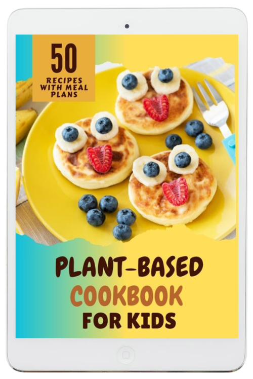

Plant-Based For Kids Cookbook - 100+ Fun, Easy Vegan Recipes
Product profile · Marketplace data 2026-10-09 · Sales-page research 2026-10-09 · Categories: Food & Drink, Health & Fitness

Marketplace record
| Product type | E-books |
|---|---|
| Price | $19.02 (Single payment) |
| Affiliate commission | 60% |
| Refund window | Per the vendor's sales page — check the official page before buying |
| Vendor | plantbasedresource (listed since 2025-06-16) |
| Marketplace stats* | Cart conversion — · cancel rate — · affiliate earnings/sale $11.41 |
* Vendor-side marketplace statistics reported by Digistore24; they depend on traffic quality and are not a forecast.
Vendor's marketplace description
The Perfect Digital Cookbook for Health-Conscious Families! Looking to tap into a growing niche of plant-based parents? Promote the Plant-Based for Kids Cookbook – an easy-to-follow, family-friendly recipe guide with over 100 nutritious vegan meals tailored just for children! This value-packed digital cookbook includes: ✅ Breakfasts, lunches, dinners & snacks✅ Allergy-friendly recipes (soy-free, n…
From the vendor's sales page
Page title: Plant-Based For Kids - Plant-Based For Kids
Meta description: https://vimeo.com/1087375219?share=copyfl=svfe=ci
Section headlines
- Raise Your Kids on a 100% Plant-Based Diet Without Giving Up Their Favorite Comfort Foods!
- Get Ready to Wow Your Little Foodies with These Vegan Comfort Foods...
- Who Is This Cookbook For?
- A Sneak Peak Of What's Inside
- Click a Recipe Below to Preview
- These Recipes Look Amazing… But I’m Just Too Busy to Cook!
- What You Get With Plant-Based For Kids Cookbook
- This workbook helps kids get excited about eating more plants and teaches them why being kind to animals and the planet is so important—through food, fun, and creativity. Delivered instantly as a downloadable PDF. No shipping. No waiting. Just print, play, and learn!
- LIMITED TIME OFFER!
- Only $17 Today!
Opening copy
You want your kids to get all the nutrients they need. You want meals that are quick, easy, and actually taste good.
And most of all, you want to feel confident that you’re doing the right thing for your children’s health and well-being.
Whether you’re: Just beginning your plant-based journey and looking for simple recipes your kids will actually eat (without cooking separate meals for everyone)
Prices mentioned on the page: $17 · $24
Guarantee language found: “60” — always confirm the current terms on the official page before relying on it.
Research method: raw HTML fetch · 1988 words on page · quality: rich · researched 2026-10-09. Full research file (MD) ↗
Where to check it out
Read the vendor's full sales page (current price, guarantee terms and bonuses are listed there):
View official sales page
That link is an affiliate link — if you buy through it we earn a commission from the vendor at no extra cost to you.